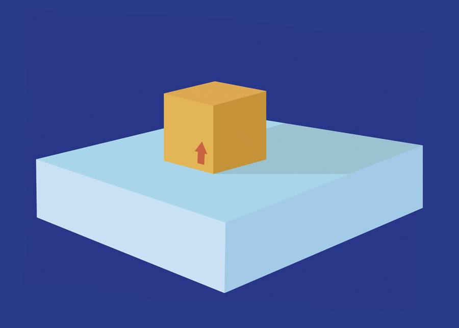
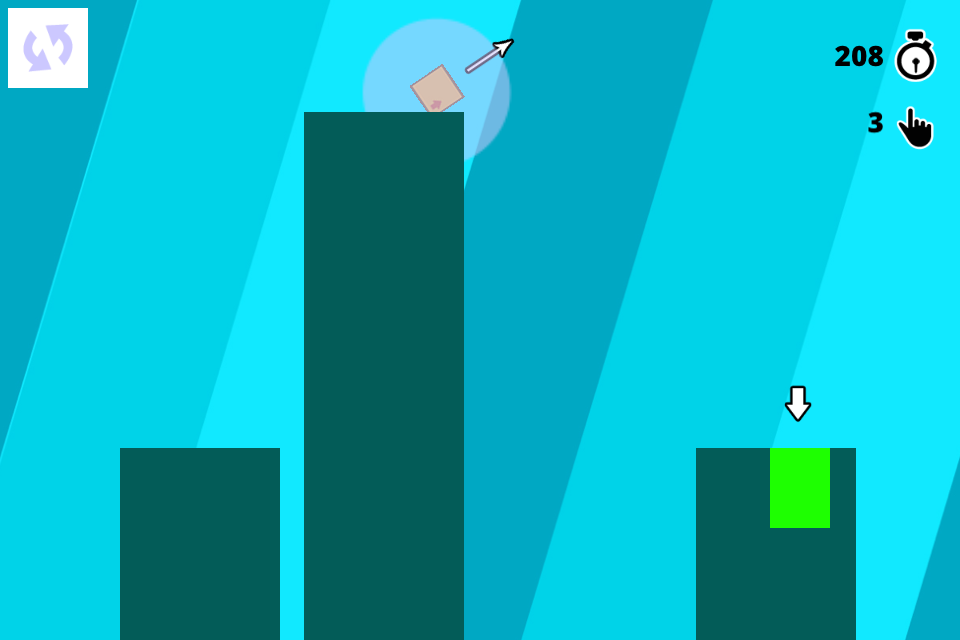
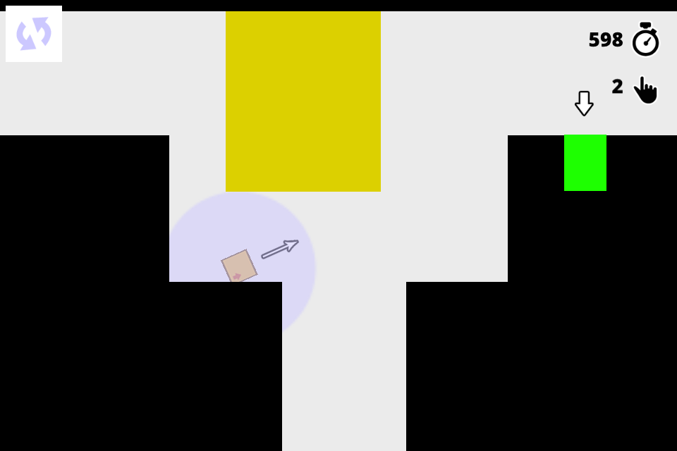
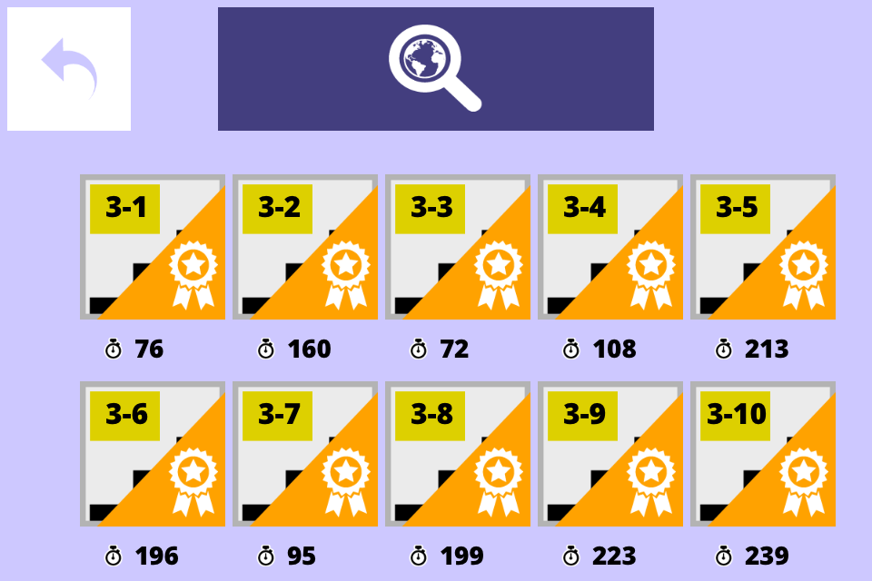

Eu sempre recebo e-mails pedindo para divulgar jogos, porém isto é algo que decidi desde o início do blog não fazer. Eu acho importante divulgar, mas fazer um post falando de um jogo não é o tipo de conteúdo que eu quero para o blog, por isso sempre respondo falando que não faço reviews ou divulgação de jogos, mas sempre ofereço uma oportunidade para divulgação do jogo através de um postmortem. Desta forma o desenvolver ganha sua divulgação, e os leitores deste blog ganham uma história sobre o desenvolvimento de um jogo.
Isto é importante por que é possível aprender muito apenas lendo o que outras pessoas fizeram e deu certo, e também o que deu errado. Já vi muita gente falando que aprendeu com os postmortems publicados aqui, por isso fico feliz em sempre ter este espaço para todo desenvolver que tem seu jogo publicado (esta é a única regra). Não importa se o texto é longo e detalhado, ou curto e objetivo, sempre podemos aprender a partir da experiência dos outros.
Desta vez vamos ver como foi o desenvolvimento do jogo Geometry World do Eder Gabriel. Muito obrigado por enviar o texto abaixo e parabéns pelo jogo publicado!
Geometry World
Olá! Sou o Eder, designer do Geometry World. Abaixo a descrição dele, compartilhando alguns pontos que percebi durante a criação do game.

Descrição do game
Geometry World é um puzzle em que o jogador tem como objetivo colocar a caixa em um determinado lugar do cenário. O jogo tem cinquenta níveis divididos em cinco mundos com características particulares, por exemplo, o segundo mundo tem as colunas deslizantes.
Apenas posicionando a caixa na posição determinada, o jogador desbloqueia os primeiros quarenta níveis do jogo. O último mundo é desbloqueável coletando as medalhas de conquista disponível de acordo com o objetivo dos 40 níveis anteriores.

Para controlar a caixa, o jogador deve segurar na tela e direcioná-la para a direção em que ele queira. Os principais desafios são conseguir todas as conquistas dos cinquenta níveis e se acostumar com a física do jogo.
Por eu estar mais preocupado com os aspectos funcionais do jogo, criei o design dele mais minimalista para diminuir o tempo de criação do jogo. Essa foi uma dúvida que eu fiquei por um tempo, de como alinhar uma arte funcional para o game, sem gastar muito tempo. Um requisito meu nesse projeto foi o de não usar palavras nas ações do jogo, apenas ícones.
Conforme fui mostrando para os amigos mais próximos, reparei em alguns pontos que não ficaram claros o suficiente e provavelmente, eu crie em novas formas de apresentar isso nas futuras versões. Esses mesmos testes também me fizeram a dar um maior valor a como ensinar as pessoas a jogar nas telas iniciais.

Pontos Negativos
Tive um atraso para concluir o game porque num teste com o iPod Touch, alguns cenários não estavam com a resolução ideal, porque o jogador não conseguia fazer o movimento correto para alcançar um determinado lugar.
Por se tratar de um jogo mais longo, pude aplicar alguns conceitos de level design. Mas sempre tem alguns pontos que ficam pendentes, por eu não ter ninguém para testar e discutir quando eu estava definindo como seriam os níveis.
Tem um erro que não descobri o que faz com que ele não reconheça a posição do jogador quando ele posiciona no lugar correto. Ele é bem inconstante, nas próximas versões, vou ter que inventar uma outra forma de validação, porque quando é reiniciado o app e concluindo a mesma fase, o erro desaparece.

Uma outra dificuldade foi colocar e testar o aplicativo na AppStore, por ser bem rígido o controle deles são necessários diversos certificados no iMac e no iTunes Connect que fui descobrindo e sempre acabava atrasando a publicação.
Tenho pesquisado algumas formas de propaganda, mas o mais difícil é convencer alguém que não me conhece a pagar pelo jogo e criei um flyer para divulgar por aí.
Pontos Positivos
Descobri o Corona SDK em uma pesquisa na faculdade, por ter uma curva de aprendizado menor em relação aos outros, acabei utilizando ele. Depois de alguns testes e a criação do meu primeiro game mobile, o Moving Kart, percebi que era possível criar algo mais complexo, que a comunidade do Corona é bem ativa e as minhas dúvidas sempre foram explicadas de algum jeito. Fiquei surpreso com o tamanho final do meu app para um jogo de 50 níveis (menos de 9MB).
Sempre tive o interesse em criar um aplicativo na AppStore para tentar deixar o meu portfolio mais interessante e consegui depois de 10 meses de produção e alguns meses que ficou congelado o projeto.
E o aprendizado que ganho com isso é enorme, principalmente, por ter que planejar todas as possibilidades do game, já que fiz sozinho, esse projeto me ajudou a ser mais analítico com qualquer sistema que eu crie no futuro.
Links